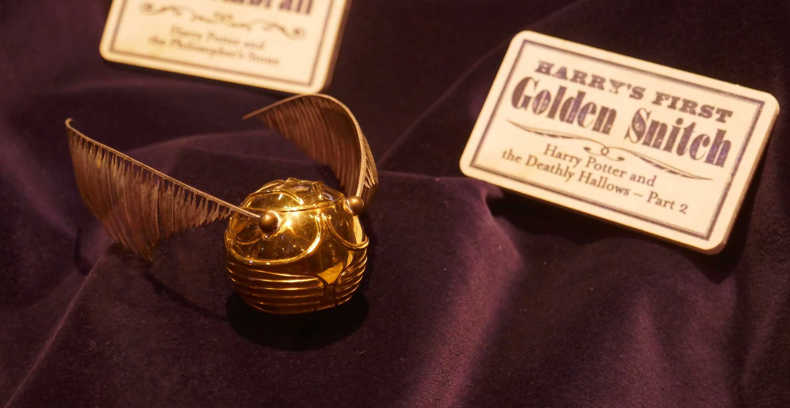

Het ontstaan
Zwerkbal is een beroemde sport in de wereld van tovenarij. Een beetje zoals de equivalent van voetbal in onze wereld, de Dreuzel wereld.
Ontstaan in 1050, is het de eerste bezemsteel-georiënteerde sport die wereldwijd bekend geworden is in de tovenaarswereld, en dit komt voornamelijk omdat zwerkbal een combinatie is van van veel verschillende bezemsteelsporten van overal op de wereld.
Deze sporten werden met de loop der jaren op de een of andere manier toegevoegd aan de sport Zwerkbal.
Een aantal van de belangrijkste sporten worden hieronder opgelijst:
- Stichstock
- Een spel waar één beschermer, ook bekend als keeper, een bal beschermt van de anderen. Hieruit kwam de keeper rol voort in Zwerkbal.
- Aingingein
- Een parcoursport waar de vlieger door brandende hoepels moest vliegen met een bal in zijn hand, om uiteindelijk die bal op een doel te schieten.
- Creaothceann
- Een spel dat werd gespeeld in Schotland, maar nu al lang verboden is door de vele doden die tijdens het spelen van het spel al zijn gevallen. Hier kwam het idee van de ‘beaters’ vandaan.
- Shuntbumps
- Een heel erg eenvoudig spel waarbij de ene partij probeert de andere van de bezem te duwen.
- Swivenhodge
- Een beetje zoals de variant van tennis. Maar dan wel op een bezemsteel.
De gouden snaai
Nadat alle sporten bij elkaar werden gevoegd om ons geliefde spel te maken, was er nog steeds iets dat ontbrak.
Er werden jagers geïntroduceerd in het spel, deze moesten origineel op een kleine en vliegensvlugge vogel jagen die, met magie, in het stadium gehouden werd. Als de vogel werd gevangen door een van de teams, kreeg dat team automatisch genoeg punten om te het spel te winnen.
De vogel was echter nog een te kleine uitdaging voor de jagers die als maar meer ervaring kregen. Daarom moest er snel een alternatief gevonden worden.
En terwijl de meeste mensen hiermee bezig waren, kwam Bowman Wright met het idee van 'de gouden snaai', een kleine gouden bal, die nog moeilijker te vinden of te voorspellen is.


De professor zijn voorstel werd snel goedgekeurd, de Gouden Snaai werd in het spel geïntroduceerd en Zwerkbal was bijna voltooid.
Zoals bij alle sporten, werden de regels nog enkele keren over kleine puntjes aangepast, tot we in 1883 het moderne spel verkregen dat vandaag gespeeld word.